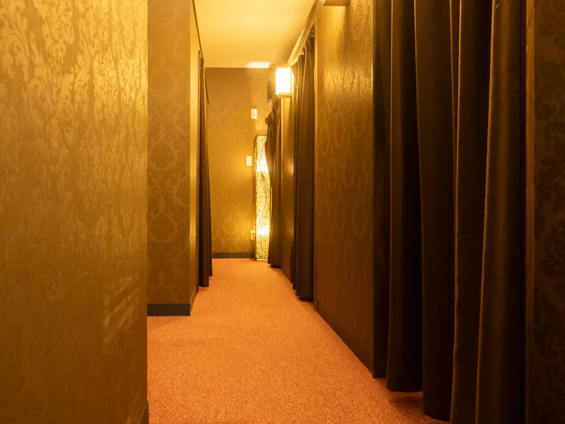

新横浜駅 徒歩1分
新横浜駅 徒歩1分
てもみサロン ペパームーン
新横浜店 本店
- 営業
- 平日 11:00～翌2:00
土日祝 10:00～翌2:00
最終受付 0:30 - 住所
- 横浜市港北区新横浜2-14-24 sk2ビル 7階-A
- 電話
- 045-624-9825

深層リラックス
Aroma Relaxアロマオイルのやさしい手技で、全身の疲れをほどき、深いリラックスへ。


人の心と身体は、自然の一部。そのリズムが乱れたときこそ、本来の調和を取り戻すことが大切です。
ペパームーンは経絡を重視し、リラクゼーションとエステのメニューを通じて、乱れたリズムを整えます。新横浜駅をはじめ各店舗とも駅から近く、通いやすさとリーズナブルな価格が自慢です。本格的な台湾式マッサージを、心ゆくまでご堪能ください。
ペパームーンについて経絡とツボを重視した台湾式の手技で、コリの芯までしっかりほぐします。
新横浜駅は徒歩1分、センター南駅は徒歩30秒。お仕事帰りにも気軽に。
新横浜店・川崎西口店は年中無休で翌2時まで営業しています。
お着替えは無料でご用意。施術後はドリンクサービスでひと息。
神奈川・東京に5店舗。どの店舗も駅からすぐの通いやすい場所にあります。
新横浜駅 徒歩1分
 センター南駅 徒歩30秒
センター南駅 徒歩30秒
 川崎駅 徒歩2分
川崎駅 徒歩2分
 川崎駅 徒歩2分
川崎駅 徒歩2分
 蒲田駅 徒歩4分
蒲田駅 徒歩4分
横にスワイプ


ネット予約は24時間受付。お電話でもお気軽にどうぞ。
お着替えは無料でご用意しています。手ぶらでお越しください。
お身体の状態を確かめながら、気になるところを重点的にほぐします。
施術後はドリンクサービスで、ゆっくりひと息ついてください。
空き状況によってはご案内できる場合もありますが、確実にご案内するためにネット予約またはお電話でのご予約をおすすめします。
お着替えは無料でご用意しています。お仕事帰りでも手ぶらでお越しください。施術後にはドリンクサービスもございます。
新横浜店は翌2時まで（最終受付0時30分）、川崎西口店は翌2時まで（最終受付1時）、PepperMoon Beauty 川崎西口店・ソフトハンド蒲田西口店は24時まで（最終受付23時）、センター南店は23時までです。
新横浜店・川崎西口店・PepperMoon Beauty・蒲田西口店では各種クレジットカード（VISA・MasterCard・JCB・American Express・Diners Club）がご利用いただけます。電子決済は、新横浜店でPayPay・d払い・メルカリPay・WeChat Pay・Alipay、蒲田西口店でPayPay・d払い・メルカリPay、センター南店でPayPayがご利用いただけます。現金は全店でご利用いただけます。
ツボ押しを重視した台湾式の整体です。お身体の状態を確かめながら、特に硬くなっている部分を重点的にほぐし、つらいコリや疲れを和らげます。いちばん人気は整体60分＋足裏30分の「基本コース90分（6,900円）」、初めての方には「お試しコース60分（4,980円）」もございます。
全身をしっかりもみほぐす台湾式の整体がおすすめです。足の疲れやむくみも気になる方には、整体60分＋足つぼ30分の「基本コース90分（6,900円）」がいちばん人気です。施術前にお悩みをお聞かせいただければ、気になるところを重点的にほぐします。
全店で英語での対応が可能です。新横浜店・センター南店では中国語でもご案内できます（担当スタッフにより異なります）。英語のメニューもご用意しています。
ラジオ波で身体の深部を温め、脂肪にアプローチする痩身機器です。1部位15分2,500円からお試しいただけます。オイルマッサージと組み合わせたコースも人気です。